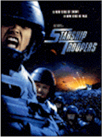
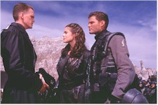
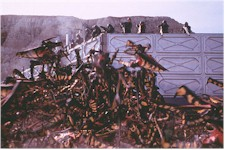
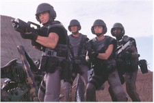
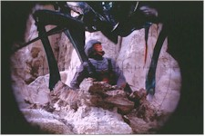

Contents | Features | Reviews | News | Archives | Store |
 |
|
| Movie Credits | Buy It! |
Starship Troopers
Review by Eddie
Cockrell
Posted 7 November 1997
|  | Directed by Paul Verhoeven Starring
Casper Van Dien, Dina Meyer, Screenplay by Ed Neumeier, |
Far and away the most fun to be had a the movies this season, Starship Troopers is a four star popcorn movie in the grand tradition of Hollywood escapism and excess – the best summer film of the fall season – and an imaginative yet reverent retooling of a classic science fiction novel that succeeds independently of it's source by virtue of some shrewd character juggling and bold plot enhancement. As such, the film is sure to please not only the legions of science fiction fans who revere the work of author Robert A. Heinlein but the general public as well, a healthy combination of whom will stream to the multiplexes on the bounce and lead the film to box office victory.
In an unspecified, seemingly utopian future, intergalactic warfare erupts as a race of intelligent and deadly arachnid-like creatures ("Bugs") threatens the peace of the global Federation. Caught up in a combination of young love and patriotic fervor, high school student John Rico (Casper Van Dien) follows his girlfriend Carmen Ibañez (Denise Richards) into military service, pulling Mobile Infantry to Carmen's Fleet Academy (she wants to pilot a starship). Also enrolling are chum Carl Jenkins (Neil Patrick Harris), who is drafted into the Games and Theory branch of military intelligence by virtue of his nascent psychic abilities, and Dizzy Flores (Dina Meyer), who loves Johnny from afar and so chooses the infantry as well.
After sending Johnny an electronic "Dear John" letter, Carmen blazes her way to second in command of the starship Rodger Young under Captain Deladier (Brenda Strong) and alongside fellow cadet and maybe-boyfriend Zander Barcalow (Patrick Muldoon). Meanwhile, Johnny slogs through basic training at Camp Arthur Currie under the watchful eye of Sergeant Zim (Clancy Brown), with a group of buddies that include Ace Levy (Jake Busey), Sugar Watkins (Seth Gilliam), Kitten Smith (Matt Levin) and Shujimi (Anthony Ruivivar).
As the war with the Bugs heats up and the infantry loses a fierce battle on the distant Klendathu, Johnny finds himself serving under hard-as-nails Lieutenant Jean Rasczak (Michael Ironside), who, as Rico's high school professor of History and Moral Philosophy, had drummed into the youngster the idea that "something given has no value" as an explanation for why only veterans are qualified to vote. On the barren Planet P, Rico proves his mettle, leading a daring and unauthorized rescue of Carmen from a Bug tunnel and watching as first Zim and then Carl are thrust into the limelight of victory. Reunited with his chums for a brief time, the infantryman is given his own platoon ("Rico's Roughnecks") in the ongoing fight to thwart Bug aggression.
After the critical drubbing he took for Showgirls (1995), Dutch-born director
Paul Verhoeven has returned to more familiar genre material, reuniting much of the same
principal crew – producer Jon Davison, composer Basil Poledouris,  Creature Visual Effects
Supervisor Phil Tippett, cinematographer Jost Vacano, screenwriter Ed Neumeier – that
made RoboCop a hit ten years ago (some of them also worked on the 1990 Arnold
Schwarzenegger vehicle Total Recall, which was adapted from Philip K. Dick's short
story "We Can Remember It For You Wholesale"). A new-found confidence shines
through, as Starship Troopers moves with authority and more than a bit of bravado,
confident in the appeal of a kind of goofy macho seriousness that allows the viewer to at
once hoot at and be sucked in to the proceedings. In fact, Starship Troopers may be
the best pure, yell-out-loud science fiction movie since The Empire Strikes Back
(1980), or maybe Aliens (1986), combining as it does the Saturday matinee mood of
the former and the otherworldly gore and macho bluster of the latter (which also seemed to
be, speaking diplomatically, inspired by Heinlein's book).
Creature Visual Effects
Supervisor Phil Tippett, cinematographer Jost Vacano, screenwriter Ed Neumeier – that
made RoboCop a hit ten years ago (some of them also worked on the 1990 Arnold
Schwarzenegger vehicle Total Recall, which was adapted from Philip K. Dick's short
story "We Can Remember It For You Wholesale"). A new-found confidence shines
through, as Starship Troopers moves with authority and more than a bit of bravado,
confident in the appeal of a kind of goofy macho seriousness that allows the viewer to at
once hoot at and be sucked in to the proceedings. In fact, Starship Troopers may be
the best pure, yell-out-loud science fiction movie since The Empire Strikes Back
(1980), or maybe Aliens (1986), combining as it does the Saturday matinee mood of
the former and the otherworldly gore and macho bluster of the latter (which also seemed to
be, speaking diplomatically, inspired by Heinlein's book).
What is it about this book that's so special? First published in 1959, Robert A. Heinlein's controversial "Starship Troopers" was written in part as a direct reaction to Eisenhower's decision to suspend nuclear testing and in part to glorify the military service and the principle of volunteering for it. The novel appeared at a key moment in the career of the author, who had established a sizeable reputation based on distinctive short stories and a string of successful juvenile science fiction novels. Following the education, training and adventures of a young recruit in the strict service of the future, "Starship Troopers" was deemed too sophisticated for younger readers by Heinlein's long-time publisher (the dispute severed their relationship) but is often mentioned in the same breath as his juvenile output today. This stance, neither fish nor fowl, is one of the book's chief strengths, as it combines a rousing coming-of-age story with the kind of sophisticated, speculative polemic that became the hallmark of Heinlein's later work (the author died in 1988). Heinlein purists have been debating the merits of the film ever since it was announced as a joint production of TriStar and Disney prior to the release of Showgirls.
There's a reason only a handful of films have been made from Heinlein's work, and it has as much to do with his stylized dialogue as with the fantastic nature and controversial philosophies of the stories. The true hero of Starship Troopers is Neumeier's script, which should be taught to all aspiring screenwriters as a model of economic yet imaginative adaptation. Taking a story that begins with a flashback and revolves around a single protagonist episodically describing his adventures, Neumeier has enhanced the flashback and simplified the hero (he's now "Johnny," not "Juan" and obviously Anglo-Saxon, not Filipino as in the book). Minor characters have been beefed up to flesh out the dramatic elements: while Sergeant Zim is virtually unchanged, Rico's lieutenant and mentor, Jean Rasczak, is an amalgam of minor but pivotal authority figures (Career Ship's Sergeant "Jelly" Jelal, Colonel Dubois and Major Reid) who serve to illustrate Heinlein's provocative theme that "service guarantees citizenship." Ace is now Rico's principal buddy, while Carl Jenkins has his last name appropriated from a minor character and is a blend of the boy that Johnny joins up with and the "spatial senser" who makes a brief appearance at the end of the novel. Other grunts mentioned in passing who have lines in the movie include Breckinridge, Kitten Smith, Bronski, and Shujumi. Only Zander Barcalow is a completely new character, functioning rather obviously as the Rico's principal competition for the affections of Carmen Ibañez.
On the distaff side, Carmen herself has been promoted to major player, as has Dizzy Flores (who was a boy in the book and promptly died in the opening flashback). The two play off each other well, as the wide-eyed, voluptuous, constantly smiling Carmen is in direct contrast to the lusty, physical Dizzy (while this might seem obvious, some Heinlein fans will tell you that these two extremes represent the kind of women's roles he wrote and that prompted no end of debate). Even Captain Deladrier is more of a presence, contributing to the generational feel of the authority, or "adult" figures that serve to highlight the achievement of the young recruits.
One modification to the story that may rankle purists is the elimination of the powered suits and drop capsules, which not only renders moot the novel's most colorful bit of jargon ("on the bounce"), but changes fundamentally the tactics used to fight the Bugs. The M.I is now composed entirely of footsoldiers (with conventional looking and acting guns), which in fact heightens the drama of the Bug clashes by making the humans much more vulnerable. There's no mention of the Cherenkov drive that zips the humans about the galaxy, but the Rodger Young (named after a WWII private who distinguished himself in a battle in the South Pacific and was awarded a posthumous Medal of Honor) has been promoted from corvette transport to full-fledged starship and leads a flotilla of truly eye-popping vessels that figure in Carmen's parallel training and the later battle scenes.
Bug-wise, the other antagonists, "Skinnies," have been written out in favor of a single warrior Bug population (crawling and flying), a queen/brain caste and some sort of unidentified insects that skitter around the underground tunnels.
These are random observations, sure to be augmented in future specialized articles by the kind of closer scrutiny the screenplay and film deserve. There are a few faults, of course, some unavoidable and some just stupid. By beefing up minor characters to supporting status and then having their stories intertwine, the film gives the impression that it's a small universe after all as everyone keeps bumping into each other at pivotal moments. And although Heinlein subtly but strongly emphasized the mixing bowl of the future society in this and other books (with character names like Cunha, Brumby, Hughes, Moise, Naidi, Navarre, Malan, Bjork, Silva, Landry, Blackstone, Bayonne, Do Campo, and Nyberg in "Starship Troopers" alone), the only characters of color who surface in Starship Troopers the movie come on strong at first but meet violent ends soon thereafter. An unfortunate byproduct of this is the underlining of the more fascistic elements of the story, which has always been a sore spot with Heinlein supporters ("I almost never hear of it save when someone wants to chew me out over it," Heinlein himself wrote of the book's impact and the subsequent deluge of "nasty 'fan' mail" that swamped him. "I don't understand it.").
But for the most part, Starship Troopers manages the neat trick of updating a 1950s book to a 1990s sensibility with little or no loss of the spirit of the original. The acting is serviceable without being particularly distinctive, although Ironside's reading of the new line "it sucked his brains out" reveals much of the film's pulp heart. Whole chunks of Heinlein's dialogue surfaces at regular intervals throughout (unfortunately, the oft-quoted favorite "Bugs, Mr. Rico! Zillions of 'em! I'm a-burnin' 'em down!" didn't make it to the final draft), yet Neumeier and Verhoeven have conspired to do a masterful job of updating and streamlining the material for a generation disdainful of discourse and addicted to ever newer and better special effects (two developments Heinlein would probably loathe). Of particular interest here is the bracketing device of slyly self-conscious promotional recruitment films interspersed with internet-like stream-of-consciousness information screens ("would you like to know more?," they purr) that invite the viewer to join in a running burlesque of the genre's seriousness while at the same time providing the kind of spectacle and exotic thrills contemporary audiences demand. Verhoeven's notorious penchant for brutal, abrupt violence is on full display as well, although as usual a significant portion of it is used to sadistic comic effect. This is particularly jarring given the wholesomeness and generic beauty of the competent young cast, most of whom are refugees from television shows like "Beverly Hills 90210" and "Melrose Place" – and are sure to pull in the coveted demographic critical to the film's success (since you asked, Blur's "Song 2," which plays under some of the TV trailers, isn't in the film).
Hollywood often guarantees trouble when it comes to adapting popular works of fiction, but the existence of this particular Starship Troopers – especially given the vicissitudes of the entertainment-by-committee approach to moviemaking so often employed by the studio system and the version of the novel that approach would've yielded – is a tribute not only to the enduring influence of Heinlein and his books but to the skill of a screenwriter who respects his source material and a director who understands the visceral appeal of fantastic stories told with a robust blend of reverence and mischievousness. Perhaps somewhere, as this is written, other talented scenarists are adapting "Glory Road," "Stranger in a Strange Land," "Tunnel in the Sky," "The Year of the Jackpot" or any one of the numerous novels and stories of Robert A. Heinlein for the big screen. If the pre-ordained success of Starship Troopers creates a bull market for this vibrant body of work, everybody wins, because this new movie is that rare thing: a big-budget action fantasy with subversive smarts that serves not only the core audience of genre devotees but uninitiated action movie fans as well.
Contents | Features | Reviews | News | Archives | Store
Copyright © 1999 by Nitrate Productions, Inc. All Rights Reserved.